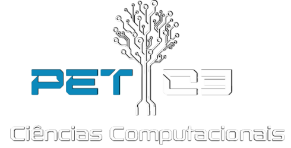

O PET de Ciências Computacionais
O PET Ciências Computacionais é um grupo de 18 estudantes de automação, computação e sistemas de informação que, com a orientação de um professor, explora ensino, pesquisa e extensão para criar experiências de aprendizado únicas.
Saiba Mais

PET de Ciências Computacionais
O PET (Programa de Educação Tutorial), criado em 1979 pela CAPES e consolidado pelo Ministério da Educação, é uma iniciativa que visa integrar ensino, pesquisa e extensão em grupos organizados por cursos nas Instituições de Ensino Superior do país.
Orientados pela educação tutorial e pelo princípio da indissociabilidade entre ensino e prática, os grupos PET, formados por estudantes e tutores docentes, promovem uma formação completa, expandindo o conhecimento e contribuindo para uma compreensão integral do mundo e da própria carreira.
No PET Ciências Computacionais, esse espírito se traduz em projetos que impactam a vida acadêmica e profissional dos membros e de toda a comunidade universitária. Quer saber mais? Acompanhe nossas ações e projetos ou siga-nos no Instagram @petc3furg.
Explore também nosso site e conheça nossos projetos e membros.